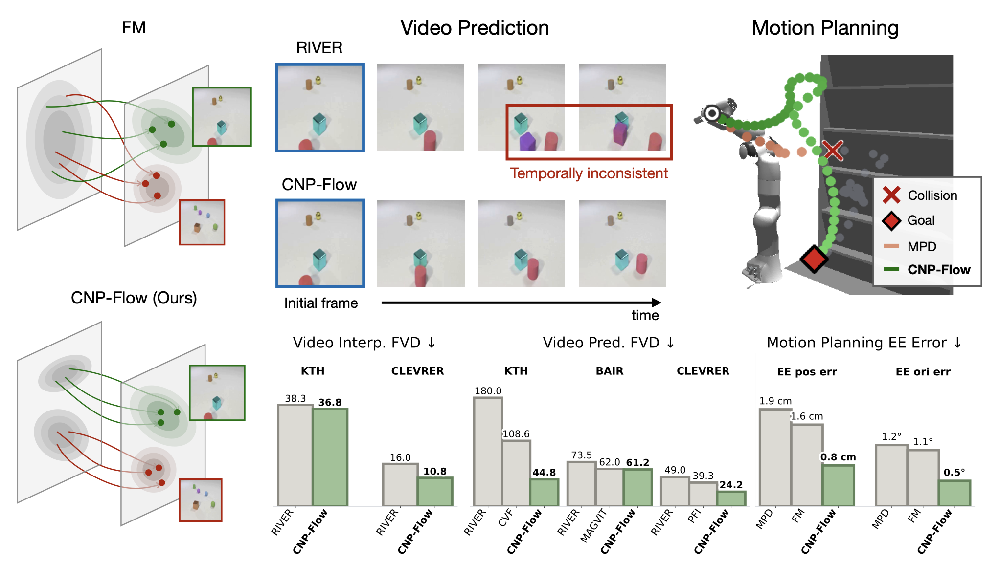
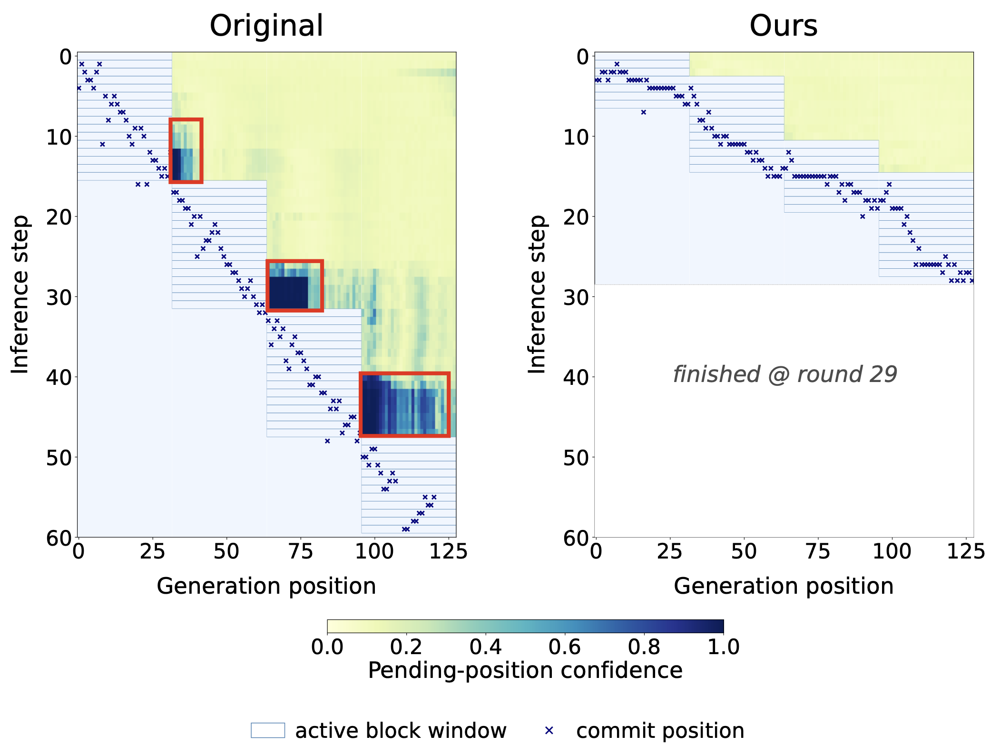
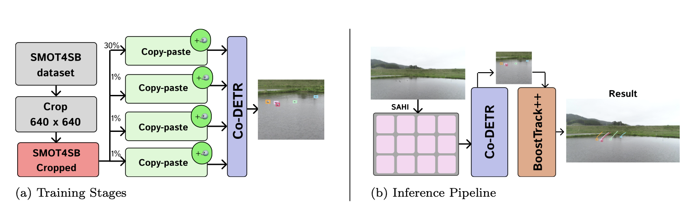

Learning Conditional Source Distribution via Flow Reversal for Temporal Flow Matching
In submission, 2026
I am an undergraduate student in Computer Science and Information Engineering at National Taiwan University, working with Tsung-Wei Ke at the Embodied AI Lab. My research focuses on efficient machine learning, exploring sources of computational inefficiency in modern learning systems and developing simple, general algorithmic methods to improve efficiency across learning and inference. I am seeking PhD opportunities for Fall 2027.

In submission, 2026

In submission, 2026

19th International Conference on Machine Vision and Applications (MVA), IEEE, 2025
ACM/IEEE Supercomputing Conference · St. Louis, USA
Asia Pacific Advanced Network · Singapore
Asia Supercomputer Community · Qinghai, China
19th International Conference on Machine Vision and Applications (MVA) · Kyoto, Japan
Summer Student, CMS CRAB Team
Geneva, Switzerland
Teaching Assistant · National Taiwan University
Taipei, Taiwan
Teaching Assistant · National Taiwan University
Taipei, Taiwan